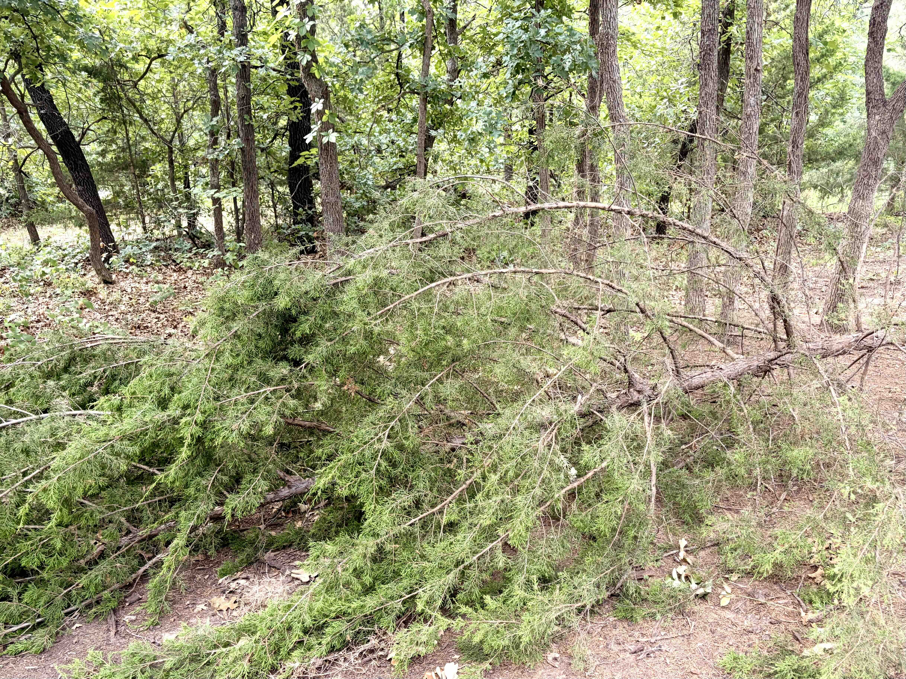
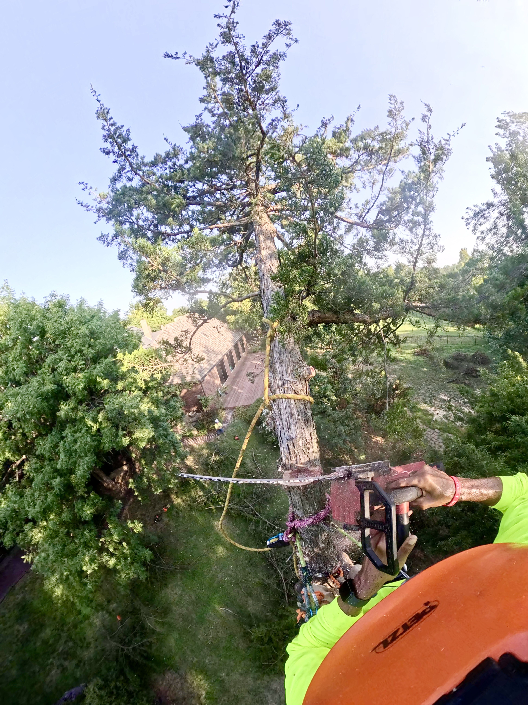

Eastern redcedar (Juniperus virginiana) belongs in Oklahoma.
It grows along rocky slopes and fence lines, beneath mature hardwoods, across old fields, beside houses, and seemingly anywhere else a bird can carry a seed.
Its evergreen foliage provides year-round cover for wildlife. Its berry-like cones provide food. A mature cedar in the right place can be a beautiful and valuable part of the landscape.
The harder question is what happens when it begins to take over.
One cedar growing on a woodland edge is a tree.
Hundreds of cedars gradually filling what was once open ground can change the character of the land itself.
The question isn't whether cedar is good or bad. The question is what we want the land to become.
One cedar is different from a hundred
Eastern redcedar is remarkably good at establishing itself.
Birds distribute its seeds. Seedlings appear beneath fences, along woodland edges, in pastures, around neglected corners of residential properties, and in openings between larger trees.
Historically, recurring fire limited much of this expansion across Oklahoma's grasslands and open woodlands. Young eastern redcedars are vulnerable to fire. Where fire occurred regularly, many seedlings simply never survived long enough to become mature trees.
Modern Oklahoma is different.
Homes, roads, fences, fragmented ownership, changes in grazing, and decades of fire suppression have altered when and where fire occurs. In many places, one of the forces that historically kept cedar in check is largely absent.
The change is gradual enough to be easy to miss.
A few seedlings survive. Those trees grow. More seeds arrive. The spaces between them begin to fill.
Eventually, what had been grassland, an open woodland edge, or a navigable piece of acreage becomes dense evergreen cover.
At that point, the issue is no longer the condition of any individual cedar. The entire plant community is moving in a different direction.
Sometimes removing trees makes a woodland better
Some of the most useful cedar removal we do doesn't look much like conventional land clearing.
There may already be a mature oak, elm, hackberry, or other desirable tree forming the structure of the site. Beneath it, younger eastern redcedars have gradually occupied the available space.
Elsewhere, a woodland edge may have grown so dense that little light reaches the ground. A trail disappears. Sightlines close. An area behind a house becomes difficult to walk through or maintain.

Selective cedar removal can begin to open that structure again.
More sunlight reaches the ground. Growing space becomes available around trees worth preserving. Areas that had become almost impenetrable become accessible again.
That can create opportunities for grasses, wildflowers, shrubs, tree seedlings, and other vegetation—but cutting cedar does not automatically restore an ecosystem.
What grows afterward still depends on the plants and seed sources that remain, soil conditions, moisture, browsing pressure, invasive species, and future management.
Removal is an action. Restoration is a direction. The best cedar work considers both.
Around a home, the calculation changes
A cedar that makes sense on forty acres may make much less sense fifteen feet from a house.
Eastern redcedar's dense evergreen foliage can be useful in residential landscapes. It provides privacy, winter structure, and wildlife cover when deciduous trees are bare.
Those same characteristics can become less desirable when cedars establish densely around houses, fences, sheds, utilities, driveways, and frequently used outdoor spaces.
Sometimes the problem is simply access.
An overgrown corner becomes difficult to walk through. The fence disappears behind vegetation. You can't easily inspect what is happening beneath the trees. Other desirable plants become difficult even to see.

Selective removal can produce a surprisingly immediate change.
You can see through the property again. You can walk through it. You can maintain it.
And once some of the cedar is gone, you can finally see what else is growing there.
Oklahoma Field Research
What happens beneath the cedar matters, too
One of the less visible effects of eastern redcedar is the environment it creates near the ground.
That matters for a concern that comes up repeatedly on Oklahoma properties: ticks.
Ticks are vulnerable to drying out. Exposed Oklahoma grass can become hot, bright, and dry. Beneath an eastern redcedar, conditions can be quite different. Evergreen foliage provides shade, litter accumulates underneath, and the protected environment can retain more humidity near the ground.
Researchers in Oklahoma have measured just how pronounced that difference can be.
of the ticks collected in one paired cedar-and-grass Oklahoma field study were captured beneath eastern redcedar.
In a 2023 field study at seven sites across central and western Oklahoma, researchers placed paired carbon-dioxide tick traps beneath individual eastern redcedars and in nearby grass.
They collected 3,654 ticks.
3,522 of them—96.4 percent—were collected beneath the cedars.
Only 132, or 3.6 percent, were collected in the paired grass locations.
Lone star ticks accounted for nearly all of the ticks collected. Among lone star ticks, 98.2 percent of nymphs and 91.9 percent of adults were collected beneath eastern redcedar. All 16 American dog ticks collected in the study were also found beneath cedar.
That is a striking result, but it needs to be interpreted carefully.
It does not mean that a property containing cedar automatically has roughly 27 times as many ticks as a property without it. The study compared where ticks were captured within paired cedar and grass sampling locations.
Cedar doesn't create ticks, either.
Ticks depend on wildlife hosts, weather, moisture, surrounding vegetation, season, and the larger landscape. Removing eastern redcedar will not make a property tick-free.
What the research does show is that even individual eastern redcedars can provide substantially more favorable local tick habitat than nearby exposed grass.
For a homeowner already trying to reclaim a densely vegetated part of a property, that becomes another legitimate consideration. Opening unnecessary cedar cover can increase sunlight and exposure while making the ground easier to see, access, and maintain.
That is habitat management—not a promise of tick control.
Source: Horton, O., Propst, J., Loss, S. R., & Noden, B. H. (2024). Tick Utilization of Eastern Redcedar Encroached Areas at the Individual Tree Scale in Oklahoma. Southwestern Entomologist, 49(4), 1414–1422. Read the study .
The easiest cedar to manage is a small one
One of the strange things about cedar encroachment is how inexpensive the problem can be at the beginning.
A young eastern redcedar may be small enough to cut with a hand saw.
Leave that same tree for twenty or thirty years and the work is entirely different.
This becomes particularly important on acreage because the problem multiplies.
One little cedar is almost inconsequential.
A few hundred little cedars are the beginning of a different landscape.
Periodic inspection and selective removal can accomplish with hand tools and chainsaws what decades of neglect may eventually turn into a substantial mechanical clearing operation.
If a landowner already knows that cedar isn't wanted in a particular pasture, opening, fence line, or future trail, there is rarely an advantage in waiting for those trees to become large.
Fire is part of the story
You can't really understand eastern redcedar encroachment in Oklahoma without understanding fire.
Many of our grasslands and open woodlands developed with recurring fire as a normal ecological process. Fire killed young cedar while grasses and other fire-adapted vegetation persisted.
Prescribed fire remains an important land-management tool today, particularly on larger properties where maintaining grassland is the objective.
But fire isn't practical everywhere.
A residential acreage surrounded by houses, fences, roads, and neighboring properties is very different from a large managed ranch. Prescribed burning also requires appropriate weather, planning, expertise, and coordination.
Mechanical removal therefore has an important role.
A chainsaw doesn't reproduce everything fire does ecologically. But it can accomplish one of the things fire historically did very well: stop every cedar seedling from becoming a mature cedar.
When cedar takes over, fire changes too
There is another side to that relationship.
Young eastern redcedar is vulnerable to fire. Mature, dense cedar can become substantial fuel for it.
Eastern redcedars carry dense evergreen foliage and can retain dead material within their crowns. When many trees grow together, the result is continuous woody fuel from one tree to the next.
That deserves particular consideration around homes and other structures.
Again, context matters.
A healthy cedar standing by itself in an appropriate location is not the same thing as a dense wall of evergreen vegetation extending toward a house.
Good fuel management is about arrangement as much as species: how much vegetation exists, how continuous it is, what grows beneath it, its proximity to structures, and how the surrounding property is maintained.
The answer isn't necessarily remove the cedar.
Sometimes the answer is remove some of the cedar.
The right amount of cedar depends on the land
There is no useful universal rule for how many eastern redcedars a property should contain.
Around a home, access, visibility, screening, utilities, structures, fire fuels, frequently used spaces, and eventual mature size may matter most.
In a woodland, the question may be which trees should form the future canopy. A young cedar occupying growing space beneath a mature oak may be less important to the future stand than the oak above it.
On pasture or open acreage, the question becomes larger.
Is this land supposed to remain pasture? Prairie? Savanna? Wildlife habitat? Woodland? Some intentional combination?
If the objective requires open ground, allowing cedar to reproduce indefinitely will eventually work against that objective.
And sometimes the right answer is simply:
Keep the cedar.
A healthy mature eastern redcedar in a good location may provide privacy, beauty, winter structure, and valuable wildlife cover for decades.
There is nothing responsible about removing a useful native tree simply because other members of its species can become troublesome elsewhere.
Cedar isn't always thr problem; it is having too much of it.
Once someone learns how aggressively eastern redcedar can spread, it is easy to start seeing every cedar as an ecological enemy.
That would be the opposite mistake.
Eastern redcedar is part of Oklahoma.
Good stewardship requires discrimination rather than hostility toward a species.
- Keep trees that contribute to the landscape.
- Remove trees working against the purpose of the site.
- Protect desirable mature trees.
- Maintain openings where openings are valuable.
- Preserve cover where cover is valuable.
- Consider what should occupy the space after removal.
The goal isn't clearing for the sake of clearing.
The goal is a better landscape.
Some of the most satisfying land-management work begins in places that don't look remarkable at first.
A crowded woodland edge. An abandoned corner behind a house. A fence line disappearing into vegetation. A pasture slowly filling with cedar. A mature hardwood surrounded by younger trees competing for the same space.
Selective removal can reveal the structure that was already there.
A trail reappears. Sunlight reaches the ground. Air moves through the understory. A mature tree has room around it. A homeowner can see across the property again.
Instead of an undifferentiated mass of vegetation, individual trees and spaces begin to have purpose.
Eastern redcedar belongs in Oklahoma. It just doesn't need to take over.
Sources & further reading
Additional reading on eastern redcedar encroachment and tick habitat in Oklahoma.
- Horton, O., Propst, J., Loss, S. R., & Noden, B. H. (2024). Tick Utilization of Eastern Redcedar Encroached Areas at the Individual Tree Scale in Oklahoma. Southwestern Entomologist, 49(4), 1414–1422. View study
- Oklahoma State University Ag Research. Eastern redcedars are contributing to the spread of the lone star tick. Read OSU's overview